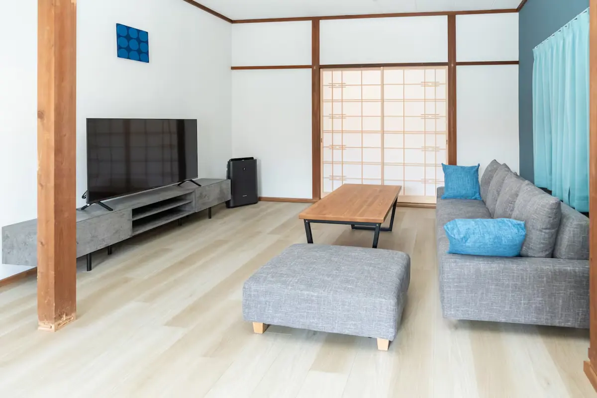
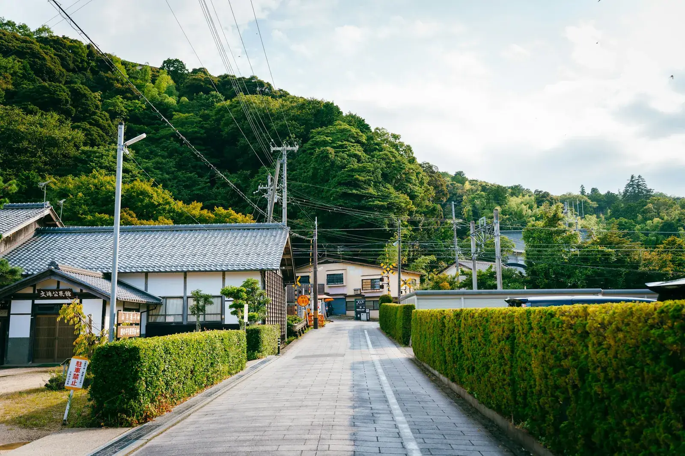
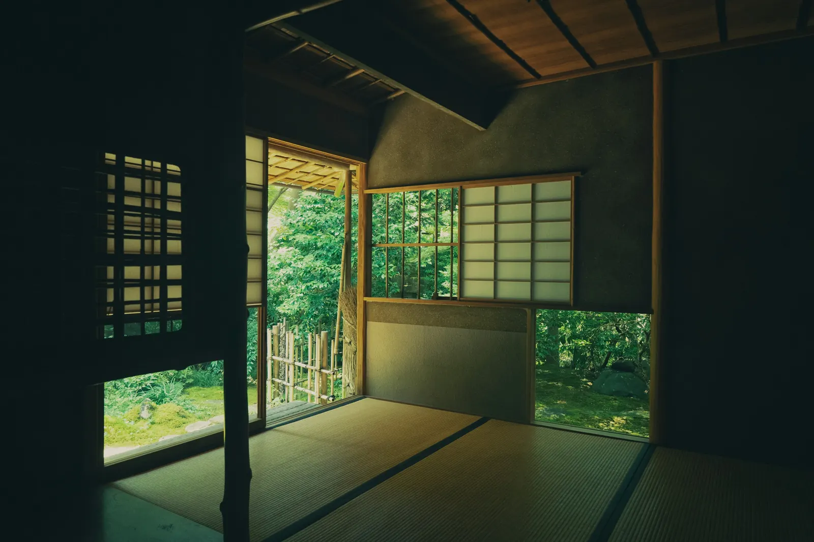
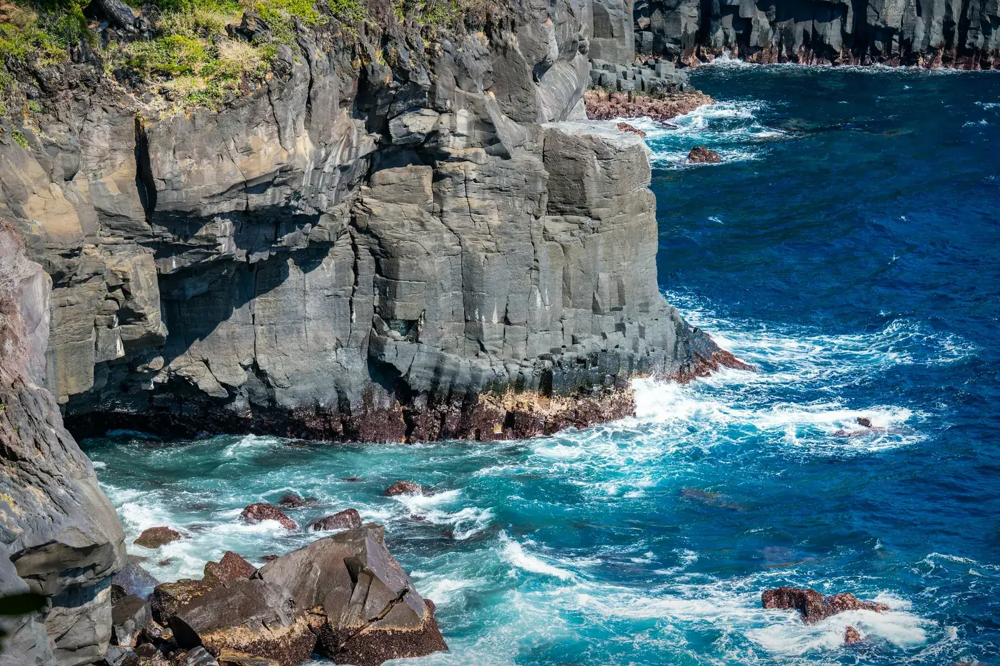

Straight answers about longer trips, living here part of the year and buying an old house outside the big cities, from the people who run a place to stay in Shimoda.
You can buy one of Japan’s nine million empty homes, but the town matters more than the house. A month there shows you what heating or cooling really costs, whether you need a car and how the neighbours are, and a monthly rental or guesthouse is the realistic way to do it from abroad.
Kinmedai is a fatty, red deep-sea fish, often simmered in soy and sugar. It’s fattiest around June, and Shimoda, said to be Japan’s top kinmedai port, is a good place to try it.
Direct trains reach Shimoda from Tokyo in about 2½ hours, for about ¥6,660 one way with a reserved seat. The south of Izu is a long way for a day, but just right for a week.
Six months, no extension, ¥10 million a year in income and ¥10 million of medical cover. With no residence card, the real question is where you’ll live and work for those six months, and Tokyo isn’t the only sensible answer.
Ordinary leases in Japan run for years and need a guarantee, so a month means a monthly apartment or a licensed holiday rental. Compare the total cost, check the listing’s licence number, and ask about the things you’ll live with every day.

NODE Shimoda, in the old town of Shimoda on the Izu Peninsula.
Our homes
A place to come back to
We renovate older places in small towns and open them to guests who stay a while. Our first is NODE Shimoda, a renovated apartment in the old town of Shimoda, sleeping up to four.
Whole apartment of about 40 m², 8 minutes’ walk from Izukyu-Shimoda Station
Work desk, fast Wi-Fi, free washing machine and gas dryer
Kitchen with gas hob, rice cooker, pans and tableware
Self check-in with a keypad lock
Sleeps up to four; shower only, no bathtub
Licensed under Japan’s Hotel Business Act, open all year
For people who want more than a quick holiday in Japan: longer trips, living here part of the year and old houses.
Stay longer
Guides for travellers who want a week or a month in one small Japanese town instead of a different city every night: access, seasons, food and where to stay.
Kinmedai is a fatty, red deep-sea fish, often simmered in soy and sugar. It’s fattiest around June, and Shimoda, said to be Japan’s top kinmedai port, is a good place to try it.
Direct trains reach Shimoda from Tokyo in about 2½ hours, for about ¥6,660 one way with a reserved seat. The south of Izu is a long way for a day, but just right for a week.
Live part-time
How to live in small-town Japan for months at a time or every year: how long you can stay, Japan’s digital nomad visa, monthly homes and working remotely.
Six months, no extension, ¥10 million a year in income and ¥10 million of medical cover. With no residence card, the real question is where you’ll live and work for those six months, and Tokyo isn’t the only sensible answer.
Ordinary leases in Japan run for years and need a guarantee, so a month means a monthly apartment or a licensed holiday rental. Compare the total cost, check the listing’s licence number, and ask about the things you’ll live with every day.
Own a home
Plain guides to owning an akiya, one of Japan’s vacant houses: who can buy one, what it really costs, restoring it and testing the town before you commit.
You can buy one of Japan’s nine million empty homes, but the town matters more than the house. A month there shows you what heating or cooling really costs, whether you need a car and how the neighbours are, and a monthly rental or guesthouse is the realistic way to do it from abroad.
Places
Izu Peninsula
The Izu Peninsula is a mountainous peninsula south-west of Tokyo with beaches on the coast and hot-spring towns inland. Our first homes are in Shimoda and Shuzenji.
NODE Shimoda, our home in the old town of Shimoda.
Where is the Izu Peninsula?
The Izu Peninsula is in Shizuoka Prefecture, south-west of Tokyo. Atami, at its northern end, is about 80 minutes from Tokyo by limited express, and Shimoda, at the southern tip, is 2 hours 29 to 44 minutes on the daily direct limited express (November 2026 timetable)1,2. Full routes and fares are in Izu Peninsula from Tokyo: trains, fares and why to stay a week.
Which towns are on the Izu Peninsula?
Shimoda. Port town at the southern tip. Beaches, a fish market and more than 1,000 tonnes of kinmedai landed a year, which the local tourism association says is the most of any port in Japan3.
Shuzenji. Inland hot-spring town, 35 minutes by local line from Mishima4.
Atami and Ito. The closest towns to Tokyo, with the most hotels.
When is the Izu Peninsula at its best?
The official swimming season at Izu beaches runs from around mid-July to late August5. Outside summer the towns are much quieter, and many restaurants and shops close early6. That quiet is the reason to come for a week instead of a weekend.
Our place is NODE Shimoda, a renovated apartment of about 40 m² on the second floor of a building in the old town. It’s 8 minutes on foot from Izukyu-Shimoda Station on a flat road, with a convenience store 2 minutes away, a supermarket 3 minutes away and Perry Road 5 minutes away7. There’s a shower but no bathtub, and about 13 steps up to the door8.
We run NODE Shimoda, a home for long stays on the Izu Peninsula, and we write the guides we wish our guests could read before they arrive.
Who runs Noki?
Noki is run by RIVIA&CO. LLC, a company based in Tokyo that renovates older houses in regional Japan and runs them as places to stay. Our first place to stay, NODE Shimoda, is in Shimoda on the Izu Peninsula, and we are renovating an older house in Yaizu on Suruga Bay.
Who writes the guides?
Noki is put together by the two founders of RIVIA&CO. We research and draft the guides with the help of AI tools, check every figure and rule against its source, and one of us reads each guide before it goes live.
Shinta Katai, co-founder. Grew up in Shizuoka Prefecture and started his career at the Shizuoka Prefectural Government, then worked at a large manufacturer, at Recruit and at start-ups in HR tech and location data. He has run NODE Shimoda since July 2025.
Yuma Ishihara, co-founder. From Osaka. He started in Recruit’s new-business development office and went on to build new businesses at start-ups in HR tech and cybersecurity.
Why “Noki”?
Noki (軒) are the eaves of a Japanese house. Swallows build their nests under them and often come back to the same one each spring. It’s also the word Japanese uses to count houses, one ken at a time. We hope you’ll find a place here that you keep coming back to.
How are the guides written?
Every figure and rule links to its source. Where we can, that is a government office or the operator itself, with the date we checked.
We say which parts are our own experience. Anything about our homes comes from running them.
We change the date only when the content changes. Fares, opening hours and visa rules move, so check the linked source before you book.
We do not sell houses or give legal advice. Guides about akiya and visas are general information.
How do you tell us something is wrong?
Write to us through our contact form (the form is in Japanese, but you’re welcome to write in English) and we will check the source and correct the guide. Company details, including our registered address, are on the RIVIA&CO. company page (in Japanese).
For a week or a month as a visitor. One town instead of a different hotel every night: how to get there, when to go, what to eat and how a house changes the trip.
Kinmedai is a fatty, red deep-sea fish, often simmered in soy and sugar. It’s fattiest around June, and Shimoda, said to be Japan’s top kinmedai port, is a good place to try it.
Direct trains reach Shimoda from Tokyo in about 2½ hours, for about ¥6,660 one way with a reserved seat. The south of Izu is a long way for a day, but just right for a week.
Also useful
Filed under another plan, but they cover part of this one.
Ordinary leases in Japan run for years and need a guarantee, so a month means a monthly apartment or a licensed holiday rental. Compare the total cost, check the listing’s licence number, and ask about the things you’ll live with every day.
Coming next
Shimoda for a week or longer
The Japanese countryside for a longer stay
Other ways in

暮
Live part-time
For months at a time, or a season every year. How long you can stay, Japan’s digital nomad visa, renting a home by the month and working remotely from a small town.
Six months, no extension, ¥10 million a year in income and ¥10 million of medical cover. With no residence card, the real question is where you’ll live and work for those six months, and Tokyo isn’t the only sensible answer.
Ordinary leases in Japan run for years and need a guarantee, so a month means a monthly apartment or a licensed holiday rental. Compare the total cost, check the listing’s licence number, and ask about the things you’ll live with every day.
Also useful
Filed under another plan, but they cover part of this one.
You can buy one of Japan’s nine million empty homes, but the town matters more than the house. A month there shows you what heating or cooling really costs, whether you need a car and how the neighbours are, and a monthly rental or guesthouse is the realistic way to do it from abroad.
Direct trains reach Shimoda from Tokyo in about 2½ hours, for about ¥6,660 one way with a reserved seat. The south of Izu is a long way for a day, but just right for a week.
Coming next
Renting a house in Japan for a month
Japan’s digital nomad visa, and where to base yourself
How long can you stay in Japan?
Other ways in

家
Own a home
Japan has about nine million empty homes, and foreigners can buy them. The listings are the easy part. These guides cover what an akiya really costs, what owning one does and does not give you, and how to try a town before you sign.
You can buy one of Japan’s nine million empty homes, but the town matters more than the house. A month there shows you what heating or cooling really costs, whether you need a car and how the neighbours are, and a monthly rental or guesthouse is the realistic way to do it from abroad.
Coming next
Can foreigners buy property in Japan?
What is an akiya?
Cheap and free houses in Japan: the real cost
Akiya banks explained
Other ways in

地
Places
We write about the places where we run homes, starting with the Izu Peninsula south-west of Tokyo.
Kinmedai is a fatty, red deep-sea fish, often simmered in soy and sugar. It’s fattiest around June, and Shimoda, said to be Japan’s top kinmedai port, is a good place to try it.
Direct trains reach Shimoda from Tokyo in about 2½ hours, for about ¥6,660 one way with a reserved seat. The south of Izu is a long way for a day, but just right for a week.
Kinmedai: Japan’s golden-eye snapper and where to eat it
Kinmedai is a red, golden-eyed deep-sea fish, often simmered in soy and sugar. Shimoda, said to be Japan’s top kinmedai port, is a good place to try it.
Kinmedai is a deep-sea fish with red skin and big golden eyes, known in English as splendid alfonsino (Beryx splendens)1. It lives on continental slopes and on the sides and tops of underwater mountains, at around 200 to 800 metres off Chiba2,3. Shimoda’s city newsletter talks about eyes that shine gold and skin that turns red all over about 40 minutes after the fish is landed4.
The name is written 金目鯛, which literally means “golden-eye sea bream”. If you’ve seen it called golden-eye snapper on an English menu, it’s the same fish. Despite the name, it isn’t a sea bream5, and it isn’t a snapper either: it belongs to the alfonsino family, Berycidae6.
What does kinmedai taste like, and how is it eaten?
Kinmedai is a rich white fish that carries plenty of fat, and it stays that way all year. Shimoda City puts that down to its life in deep water, and says it works in lots of different dishes4. If you only try it once, we’d go for nitsuke, fish simmered in soy sauce and sugar, though in our view it’s just as good raw or lightly seared.
Dish
What it is
Nitsuke
A whole fish or a thick cut, simmered until the sauce turns glossy. Our pick for a first try, and we think a big fish is worth the extra: Shizuoka’s researchers, measuring kinmedai landed at Inatori in Izu (a 2007–2011 study), found that bigger fish carry more fat7.
Sashimi and aburi
Raw slices, or slices with the skin lightly seared.
Shabu-shabu
Thin slices swished through hot broth at the table. If you see it on a menu, we’d give it a try.
Everything else
The Japanese travel magazine Tabi-mag also lists kinmedai ramen, burgers and croquettes8.
If you’re buying a whole fish, the same newsletter says a fresh one has clear golden eyes and bright red skin, and both turn whitish as it ages4.
Why is kinmedai expensive?
We think it comes down to how it’s caught and how much is caught. Off the Kanto coast and the Izu Islands, kinmedai are caught mainly on hook-and-line gear, mostly vertical longlines (tatenawa) and bottom-set longlines (soko-tate-haenawa) lowered into deep water2,3. Catches off Tokyo, Chiba, Kanagawa and Shizuoka held at just under 7,000 tonnes a year in 2005–2009, then fell to 3,797 tonnes in 20202.
The official picture of the stock has shifted over the past few years. The Fisheries Agency’s 2021 assessment rated the stock low in 2020, with the breeding (spawning) stock flat over the previous five years2. Chiba Prefecture later reported that the national assessment found the 2023 spawning stock above its target level and increasing3.
That target is the level that should allow the largest catch year after year without shrinking the stock. For you, it means kinmedai isn’t a fish to avoid, but it isn’t plentiful either. Chiba’s own landings were 1,467 tonnes in 2023, against 2,263 tonnes in 20073.
How is kinmedai different from nodoguro?
Nodoguro is a different fish altogether: it’s the market name for akamutsu, known in English as blackthroat seaperch9,10. The two are easy to mix up, since both are red and both are prized. But they sit in different families and different orders, and nodoguro lives much shallower. If a menu offers both, you’re choosing between two different fish.
About 80–150 m in the south-western Sea of Japan12, about 100–200 m in Tokushima’s account11
Name
金目鯛, “golden-eye sea bream”
“Black throat”, for the black lining inside its mouth9
The order and family here are as given by Tokyo and Tokushima’s fisheries reports. Fish classification gets revised now and then, so other books may file them a little differently.
Is kinmedai safe to eat when you’re pregnant?
Because of mercury, Japan’s health ministry advises pregnant women to limit some fish to about one 80 g serving a week. Kinmedai is on that list, along with swordfish, bluefin tuna and bigeye tuna13. The same advice puts one piece of sushi or sashimi at about 15 g, so 80 g is roughly five pieces. It’s meant to protect the unborn baby, not children or other adults13. It’s general public guidance rather than medical advice, so if you’re pregnant, your own doctor or midwife is the person to ask.
Where can you eat kinmedai in Shimoda?
Plenty of places in town serve it, and the local tourism association keeps a list to start from. As of November 2026, it names 19 restaurants and 34 hotels and inns that serve kinmedai dishes, with a note that some may be off the menu depending on the catch5.
Shimoda sits at the southern tip of the Izu Peninsula. According to the tourism association, it’s said to be Japan’s top kinmedai port. As of November 2026, its page puts landings at over 1,000 tonnes a year, about 80% of all the fish landed there5. You may also hear two local names. A 2014 TV Tokyo programme on Shimoda explained that jikinme are caught in nearby waters between Oshima and Kozushima, while oki-kinme come from grounds further out14.
The easiest place to start is Ichiba no Shokudo Kinmetei, a canteen inside the Shimoda fish market about ten minutes on foot from Izukyu-Shimoda Station. Its menu includes a kinmedai rice bowl served three ways and a whole simmered kinmedai set. Shizuoka Prefecture’s page, updated in March 2025, lists the hours as 7:00 to 9:30 for the morning set and 11:00 to 15:00 for lunch, closed on Tuesdays15. Hours do change, so a quick check before you walk over saves a wasted trip.
When is kinmedai in season?
Kinmedai is a deep-sea fish, so it’s landed all year, and the tourism association says it’s in season all year too5. Locals still point to two high points: winter, and early summer around June, when the fish are fattiest.
When
Why
Winter
The traditional season, when kinmedai goes into hot pots4,7 and the flesh is at its firmest5.
Around June
Before spawning, when the fish carry the most fat. In Shizuoka’s year of measuring fish from Inatori (part of a 2007–2011 study), the fat peaked in June at about 10%4,7.
Kinme Matsuri (all of June in 2016)
In 2016 there was a viewing spot outside the fish market, open from about 7:30 to 9:00 a.m. except on Tuesdays and Saturdays, and bad weather could cancel it4.
In 2016, then, the festival gave visitors a place to watch the morning landings in June. For this year’s events, the tourism association’s events calendar is the place to look16, and the association can help if you’d like to plan a trip around one.
Why stay overnight instead of visiting for the day?
In our view, a night in town is what makes a kinmedai trip relaxed. You get kinmedai for dinner, then an unhurried morning: a walk down to the harbour, breakfast at the market canteen from 7:00, where the morning set changes daily with the catch15, and no train to rush back for.
A day trip is possible, but the mornings are tight. The first Tokaido Line train from Tokyo Station leaves at 5:20 and doesn’t reach Atami until 7:08. The one earlier option is a 4:35 local from Shinagawa, which connects at Atami. On JR East’s November 2026 timetable, it reaches Izukyu-Shimoda at 7:5917. If a festival viewing kept the 2016 hours of about 7:30 to 9:004, you’d still have most of an hour after the ten-minute walk to the market. Routes are in our guide to getting to the Izu Peninsula from Tokyo.
If you’d like to cook a fish yourself, the Izu Fisheries Cooperative runs a shop on the ground floor of the Kaikoku Shimoda Minato roadside station that sells Shimoda kinmedai18. Shizuoka Prefecture lists it as open 8:00 to 16:30 with no regular closing day, about ten minutes on foot from the station (page updated April 2025)19. Our apartment in the old town, NODE Shimoda, has a kitchen with a gas hob, fridge, rice cooker and cookware20, and it’s eight minutes’ walk from the station21.
Common questions
Is kinmedai the same as red snapper?
No. Kinmedai belongs to the alfonsino family (Berycidae), not the snapper or sea bream families6. Whatever an English menu calls it, it isn’t a snapper.
Why is kinmedai so expensive?
We think it’s mainly how it’s caught and how much. It lives deep, at around 200 to 800 metres off Chiba, and is caught on hook-and-line gear, mostly vertical longlines2,3. Catches off Tokyo, Chiba, Kanagawa and Shizuoka fell from just under 7,000 tonnes a year in 2005–2009 to 3,797 tonnes in 20202. A later national assessment found the 2023 breeding stock above its target level and rising3.
Is kinmedai the same as nodoguro?
No. Nodoguro is the market name for akamutsu, or blackthroat seaperch10, a red fish from a different order and family (Perciformes, Acropomatidae). It lives in shallower water, at around 80 to 200 metres depending on the area11,12.
Can I eat kinmedai when I’m pregnant?
Japan’s health ministry advises pregnant women to keep kinmedai to about one 80 g serving a week because of mercury, which is roughly five pieces of sushi13. Your doctor or midwife can tell you what applies to you.
When is kinmedai in season?
It’s landed all year, and Shimoda’s tourism association calls it in season all year5. Winter is the traditional season, and the fish are fattiest around June4,7.
Can I see the kinmedai landings on a day trip from Tokyo?
In 2016, visitors could watch the landings during the June festival, from about 7:30 to 9:004. This year’s events are on the tourism association’s events calendar16. Trains are tight too: a 4:35 local from Shinagawa reaches Shimoda at 7:5917. We’d stay the night before and have breakfast at the market canteen.
How do you say kinmedai?
Roughly “kin-meh-dye”. Locals often shorten it to kinme.
Direct trains reach Shimoda from Tokyo in about 2½ hours, for about ¥6,660 one way with a reserved seat. The south of Izu is a long way for a day, but just right for a week.
You can buy one of Japan’s nine million empty homes, but the town matters more than the house. A month there shows you what heating or cooling really costs, whether you need a car and how the neighbours are, and a monthly rental or guesthouse is the realistic way to do it from abroad.
Six months, no extension, ¥10 million a year in income and ¥10 million of medical cover. With no residence card, the real question is where you’ll live and work for those six months, and Tokyo isn’t the only sensible answer.
Buying an akiya in Japan? Live in one for a month first
In 2023, Japan had about nine million empty homes, and non-residents can buy one. But you’re buying into the town, and a month there tells you more than any listing.
An akiya (空き家) is simply a house that nobody lives in. Japan’s 2023 Housing and Land Survey counted 9.0 million of them on 1 October 2023, a record 13.8% of the country’s homes1. About 3.86 million weren’t for rent or sale and weren’t anyone’s second home either, up by 369,000 since 20181. In our experience, that’s usually the group people mean when they talk about Japan’s abandoned houses.
Can foreigners buy an akiya?
Yes. Non-residents can buy, and the Ministry of Finance’s rules spell out what they need to do. Since April 2026, a non-resident who buys property in Japan has to report the purchase to the ministry under the Foreign Exchange Act, even a home they plan to live in2,3. Real Estate Japan, a property site for foreign buyers, makes the same point: you don’t need to live in Japan to buy4. Since 5 October 2026, every buyer, Japanese or not, gives their nationality when the purchase is registered5.
The rules are still moving. A bill before the Diet would create new zones within about 1 km of some defence and coast guard sites, and on uninhabited border islands6,7. Every transfer of land ownership in those zones would need the government’s approval in advance, and the changes would take effect within 18 months of the act being promulgated7. As of mid-November 2026, the bill was still before the House of Representatives, so it isn’t law yet8.
We’d also treat a house and a visa as two separate questions. If you’re hoping that owning a home will help you stay in Japan longer, ask an administrative scrivener (gyoseishoshi) who handles visas before you count on it. With the rules changing this fast, we think it’s sensible to have a lawyer or judicial scrivener (shiho shoshi) look at your own case before you sign.
Why live in the town before you buy?
Buying the house is the easy part. What you’re really committing to is the town, and a listing can only tell you so much: the price, the floor plan, a few photos. The things that decide whether you’ll be happy there only show up once you’ve lived there for a while.
What you want to know
How a month shows you
How cold an old wooden house gets in January, and what heating costs
You’ll feel it on the first cold night and see it on the electricity bill.
Whether daily life works without a car
A week of shopping and errands on foot, by bus or by bike makes it obvious, especially if you try the trips that aren’t on your doorstep, too.
Where you’ll buy food, and when the shops close
Cooking most of your own meals soon shows you what’s easy to find and what isn’t.
How rubbish sorting works on that street
You’ll be following the local collection calendar like everyone else. If there’s an English version, it’s worth asking city hall for it.
Whether the internet holds up for a working day
Normal working hours, video calls included, are the real test.
What humid months and typhoons do to the building
Neighbours and local builders know what tends to fail first in houses like it.
How the neighbourhood treats a newcomer
Saying hello, joining a clean-up day if there is one, and asking how other newcomers settled in will tell you a lot. Neighbours notice small things, too. When our broadband was being installed in Shimoda, we heard from neighbours about where the engineer’s van was parked.
None of this comes up in a viewing.
What only shows up once you live in an old house?
The wiring and the internet, in our experience. We learnt this when one of our founding members rented an older flat in Shimoda from its owner and turned it into a guesthouse. We rented rather than bought, but we think a buyer would run into the same things.
The old two-wire electrics couldn’t run the air conditioner, the fridge and the microwave all at once, so we had to ask guests not to use them together. Upgrading the wiring costs real money, so it’s something to find out before you budget, not after. Getting broadband put in took more than two months because it was the busy season, and we got by on a plug-in home router until then.
The wiring and the wait for broadband are small examples of a bigger point. With a cheap old house, the asking price is only part of what you’ll pay. Renovation, taxes, insurance and upkeep come on top, and they vary so much from one building to the next that only written quotes will tell you the real figure.
How long can you stay in Japan to test a town?
Long enough for a proper trial, for most people. There are two main ways to do it without a work or residence visa, and the rules below are as of November 2026.
Way to stay
How long
Who it’s for
Short-term visitor, visa-exempt
Up to 90 days for most visa-exempt nationalities, though some are given 15, 30 or 180 days9.
Anyone from a visa-exempt country or region. You can’t do paid work on this status, and the rule for your own passport is the one that counts9.
Digital nomad status
Six months, and it can’t be renewed. You can apply for it again six months after you leave Japan10.
Nationals of countries and regions that are both visa-exempt and have a tax treaty with Japan11. You need an annual income of at least ¥10 million and private medical insurance with at least ¥10 million of treatment cover, and you can’t work for a Japanese employer10.
This is general information, not immigration advice. The list of eligible countries for the digital nomad status changes, so check it for your own passport.
Where can you stay for a month to test a town?
You’ve got three main choices: a town’s trial home, a monthly rental, or a guesthouse with monthly rates. Which one works depends on the town, and on where you’re coming from.
Option
How long
Good to know
A town’s trial home (otameshi jutaku)
From a day or two up to a few months, and in one city for up to just under two years12,13,14
Each town sets its own rules, mostly for people planning to move. Minami-Alps City rents its trial home for one to three months at ¥21,000 a month (February 2026)13.
A monthly rental
A month or more
A furnished room or flat let by the month. In a small town there may be few to choose from, so it helps to search early.
A guesthouse or holiday home with monthly rates
A week to a month or more
Often the easiest to book from abroad, and you can try daily life in the town without committing to anything.
Trial homes sound ideal, but there’s a catch: they’re built for people who are moving, not for people testing a town from abroad. Minami-Alps City’s home is for people registered as living outside Yamanashi who intend to move to the city and have signed up for a relocation consultation13. Nationality isn’t one of the listed conditions, so if you live overseas, the city’s relocation desk can tell you whether you’d qualify.
Some cities spell it out. Shizuoka City’s long-term trial flats are city-run apartments you can rent for six months to under two years, but only if you live outside Shizuoka Prefecture and have decided, or are preparing, to move to the city. Foreign nationals qualify only as permanent residents, long-term residents, special permanent residents, or the spouse or child of a Japanese national (page updated August 2026)14. So a tourist or digital nomad stay won’t qualify there. In our view, if you’re coming from abroad, a monthly rental or a guesthouse is usually the realistic choice, and our guide to monthly rentals in Japan has more on how they work. If you’ve set your heart on a trial home, the town’s relocation office is the first call to make.
Shimoda City takes another route. Under rules in force since April 2026, it pays half the rate at designated hotels for people thinking of moving there, up to ¥4,000 a night for stays of up to 10 nights15. But you need to be registered as living in Japan outside Shizuoka Prefecture, so it won’t help if you’re coming from abroad15.
Towns within reach of Tokyo are the easiest to test. As of November 2026, the daily direct trains from Tokyo Station reach Shimoda, on the Izu Peninsula, in 2 hours 29 to 44 minutes16. Our guide to getting to the Izu Peninsula from Tokyo has the details.
If Shimoda is on your list, we run a small place there called NODE Shimoda, which can be a base while you get a feel for the town. It’s a renovated flat of about 40 m² in an apartment building in the old town, 8 minutes’ walk from Izukyu-Shimoda Station17,18. Our site describes it as handy for medium and long stays19, and it’s licensed under Japan’s Hotel Business Act. Most of our guests so far have come from Europe and North America, and some come to work remotely.
The living room of NODE Shimoda, our flat in Shimoda’s old town.
What does a trial month look like?
Mostly, it looks like ordinary life, with a few deliberate tests built in. Based on what caught us out in Shimoda, we’d plan it roughly week by week.
The first week goes on settling in: the supermarket, the clinic, the bus stop and the rubbish calendar. If you’re staying in an older building, ask your host what amperage the electricity contract allows and where the breaker box is. The old wiring in our Shimoda flat couldn’t run the air conditioner, fridge and microwave at the same time. The amperage tells you roughly how much you can run at once, and knowing where the breaker box is turns a tripped switch into a quick fix.
By the second week you’re working your usual hours and cooking at home. That’s when you find out whether the connection survives a day of video calls, and you’ll see what heating or cooling really costs. It’s also a good moment to ask a local provider how long a new line takes there, since ours took more than two months.
The third week is for asking around. You might visit the city hall desk that handles empty houses, talk to a local agent, or ask a builder roughly what rewiring an old house costs. Neighbours are often the best people to tell you what humid summers and typhoons do to houses like theirs.
By the fourth week you’ll have a fair idea of what would need to change, about the house and about the way you live. Writing those costs and doubts down while they’re fresh makes it much easier to compare towns, or to walk away.
Common questions
Can foreigners buy property in Japan?
Yes. Non-residents can buy, and since April 2026 they’ve had to report the purchase to the Ministry of Finance under the Foreign Exchange Act. Every buyer also gives their nationality at registration2,5. The rules are changing, so a lawyer or judicial scrivener can check your own case.
Will owning a house in Japan help me get a visa?
We wouldn’t count on it. We treat a house and a visa as separate questions, so if staying longer is part of your plan, ask an administrative scrivener (gyoseishoshi) who handles visas before you buy.
Is a cheap house in Japan really cheap?
Not always. The purchase price is only one part of the bill. Renovation, taxes, insurance and upkeep come on top, and they vary a lot from one building to the next, so written quotes are the only way to know before you commit.
Can I use a town’s trial home as a foreigner?
It depends on the town. Trial homes are mostly for people who plan to move there, and some spell out who qualifies. As of August 2026, Shizuoka City’s long-term trial flats took foreign nationals only with permanent, long-term or special permanent residence, or as the spouse or child of a Japanese national14. The town’s relocation office will know the current rules.
How many akiya are there in Japan?
About 9.0 million homes were empty on 1 October 2023, 13.8% of all housing, according to the 2023 Housing and Land Survey1.
This article is general information, not legal or immigration advice.
Ordinary leases in Japan run for years and need a guarantee, so a month means a monthly apartment or a licensed holiday rental. Compare the total cost, check the listing’s licence number, and ask about the things you’ll live with every day.
Direct trains reach Shimoda from Tokyo in about 2½ hours, for about ¥6,660 one way with a reserved seat. The south of Izu is a long way for a day, but just right for a week.
Kinmedai is a fatty, red deep-sea fish, often simmered in soy and sugar. It’s fattiest around June, and Shimoda, said to be Japan’s top kinmedai port, is a good place to try it.
The easiest way is the Odoriko limited express, which runs from Tokyo down the east coast of the Izu Peninsula to Shimoda without a change. In JR East’s November 2026 timetable, five leave Tokyo every day, on the hour from 9:00 to 13:00. They take 1 hour 36 to 45 minutes to Ito and 2 hours 29 to 44 minutes to Izukyu-Shimoda1. If you’re heading inland to Shuzenji, the Shinkansen and a short local line often suit you better.
Route
Changes
Time
Good to know
Direct Odoriko to Ito and Izukyu-Shimoda
None
About 1 h 40 min to Ito, 2 h 29 min to 2 h 44 min to Shimoda1
Five a day, leaving Tokyo at 9:00, 10:00, 11:00, 12:00 and 13:00, with extra trains on set days1. The 11:00 is the Saphir Odoriko, which only has Green Car and premium seats2.
Shinkansen to Atami, then a local train to Shimoda
One, at Atami
43 to 45 min to Atami by Kodama, then 1 h 29 min to 1 h 49 min to Shimoda1
With a good connection, it can beat the direct train. The 6:30 Kodama and the 7:23 local from Atami get you to Shimoda at 8:52, in 2 h 22 min1.
Shinkansen to Mishima, then the Izuhakone Railway to Shuzenji
One, at Mishima
50 to 53 min to Mishima by Kodama1, then about 35 min to Shuzenji3
Local trains to Shuzenji run about three times an hour for most of the day3, so the change at Mishima is easy to fit in.
Two a day, leaving Tokyo at 9:00 and 12:00. A third, at 10:30, runs only on set days1.
Times are from JR East’s Tokyo Station timetables for November 2026 and the Izuhakone Railway’s Sunzu Line timetable. Timetables change with the seasons, so it’s a good idea to look up the times for your travel date.
What about the bus? Tokai Bus doesn’t run a highway bus from Tokyo to Shimoda or Shuzenji. Its Mishima Express goes from Shinjuku to Mishima, from ¥2,300 one way4, and from Mishima the Izuhakone Railway takes you on to Shuzenji3. For Shimoda, the train is the simple answer.
How much does the train from Tokyo to Izu cost?
To Shimoda on the direct Odoriko, you’ll pay about ¥6,660 one way with a reserved seat. That’s the ¥4,280 fare, from Izukyu’s tables revised on 14 March 2026, plus a ¥2,380 seat charge bought before you board, from its charge table for journeys since 1 February 20252,5.
Fares and charges as of November 2026. The Izuhakone Railway applied in October 2026 to raise its fares, with the change on the Mishima–Shuzenji line planned for spring 20277.
Can you use the Japan Rail Pass to get to Izu?
Yes, as far as Ito and Mishima. The pass covers ordinary cars on JR lines, including Kodama Shinkansen trains and limited expresses like the Odoriko8,9. South of Ito, the line belongs to Izukyu, and from Mishima to Shuzenji it’s the Izuhakone Railway. On those stretches you pay the fare and charges yourself, even if you stay on the same Odoriko10.
So on an ordinary pass to Shimoda, you’ll pay Izukyu for the last leg: ¥1,860 from Ito, and Izukyu’s limited express charge is ¥800 for any distance on its line2,5. To Shuzenji, it’s ¥550 from Mishima on a local train6. If you sit in a Green Car on an ordinary pass, you pay the Green Car charge and the limited express charge too8. That matters for the Saphir Odoriko, which has no ordinary seats2.
As of November 2026, the official site lists a 7-day ordinary pass at ¥50,000 for adults bought online, or ¥53,000 through an overseas agent11. It’s mainly for visitors who enter Japan as a “Temporary Visitor”, and the official site sets out who else qualifies12. With a Tokyo–Shimoda trip at about ¥6,660 each way, we think the pass only pays off when Izu is one stop on a longer journey around Japan.
Is the Izu Peninsula a day trip from Tokyo?
The north is, but the south really isn’t. Even on the direct train, Shimoda is about two and a half hours from Tokyo1, so a return trip means about five hours on the train for a few hours on the beach. Atami is about 45 minutes away by Shinkansen and Ito about 1 hour 40 minutes on the direct train, so we think both work as day trips. The south coast and the inland hot-spring towns, in our experience, are far better if you stay.
Which Izu town suits you?
It mostly comes down to how far you want to go and how long you can stay.
Town
From Tokyo
What it’s like
Day trip or stay?
Atami and Ito
Atami 43–45 min by Shinkansen; Ito about 1 h 40 min direct
The two towns nearest Tokyo, on the east coast.
A day trip works
Shuzenji
50–53 min to Mishima, then about 35 min; or about 2 h direct
An inland hot-spring town, said to be the oldest in Izu. You can look at the Tokko-no-yu spring but not bathe in it, and there are two foot baths nearby, Kawara-yu and Sugi-no-yu13. It suits a quiet night or two more than a rushed visit.
Better to stay
Shimoda
2 h 29 min to 2 h 44 min direct
A port town at the southern tip, with nine official swimming beaches in 202614. The prefecture describes its fish market as Japan’s top landing port for kinmedai15. In our view, it’s the town that suits a week best.
Better to stay
Can you get around southern Izu without a car?
Yes, for the town and the nearby beaches. Shirahama Beach is about 15 minutes by bus from Izukyu-Shimoda Station, on a bus bound for Itadoichiki16. Tokai Bus sells two-day passes that cover most of what you’d want to see, valid on the day you buy them and the next17.
Pass
Adult price
Where it takes you
Shimoda 2-day pass
¥1,350
Shimoda town, Ryugu cave, Tsumekizaki and Shirahama17
Irozaki–Shimoda 2-day pass
¥2,850
All of the above, plus Cape Irozaki, Yumigahama, Shimokamo, Kawazu and Inatori17
You buy them at Tokai Bus’s office by Shimoda Station, open every day from 8:45 to 12:30 and 13:30 to 17:0017. Buses to the outer beaches don’t run often, so look up the return times before you head out. If you want to hop between several beaches in one day, an e-bike or a rental car makes life much easier.
When is the best time to visit the Izu Peninsula?
For swimming in Shimoda, the 2026 season ran from mid-July to late August. For a quieter stay, we’d pick the months either side.
When
What to expect
Swimming season in Shimoda (in 2026, from 18 July to between 23 and 31 August, depending on the beach)
All nine of Shimoda’s official beaches opened on 18 July 2026, mostly from 8:00 to 16:00. Shirahama Ohama and Kujukihama stayed open until 31 August and Shirahama Chuo until 30 August, but the other six closed on 23 August14. Outside the season and those hours, there are no lifeguards18.
The rest of the year
We find the towns much quieter then, and it’s the easiest time for hot springs and long walks.
The city sets the beach dates each year, so if you’re planning a late-August trip, it’s a good idea to see which beaches will still be open.
Why stay a week in Izu rather than a night?
A week turns a trip into ordinary life, and that’s when the slow pace of the south starts to make sense. A hotel room is built around one or two nights and a set dinner time. A place with a kitchen and a washing machine lets you work in the morning, head to the beach or a hot spring in the afternoon, and eat in when you don’t feel like going out.
The living room of NODE Shimoda, eight minutes on foot from Izukyu-Shimoda Station.
If you’d like to try that in Shimoda, our apartment in the old town, NODE Shimoda, is set up for that kind of week. It’s about 40 m² on the first floor, with a work desk, a washing machine and gas dryer, and a kitchen with cookware19. It’s eight minutes’ walk on the flat from Izukyu-Shimoda Station, with a convenience store two minutes away and a supermarket three20. Most of our guests come from abroad, some to work remotely and some to surf, and in summer more of them stay longer.
How long does it take to get from Tokyo to Shimoda?
2 hours 29 to 44 minutes on the direct Odoriko limited express. Five run a day, leaving Tokyo between 9:00 and 13:00 (JR East timetable, November 2026)1.
How much is the train from Tokyo to Shimoda?
About ¥6,660 one way on the Odoriko with a reserved seat: the ¥4,280 fare (revised 14 March 2026) plus a ¥2,380 seat charge bought before boarding (as of November 2026)2,5.
Can I use the Japan Rail Pass to get to Izu?
Yes, on JR as far as Ito and Mishima. From Ito to Izukyu-Shimoda and from Mishima to Shuzenji, you pay the fare and charges separately, even on the Odoriko10. A 7-day ordinary pass was ¥50,000 online in November 202611.
What’s the best way to get to Shuzenji?
You can take the Shinkansen to Mishima, 50 to 53 minutes on a Kodama1, and then the Izuhakone Railway, about 35 minutes for ¥5503,6. Two direct Odoriko trains also run every day, at 9:00 and 12:00, taking about two hours1.
Is there a bus from Tokyo to Shimoda?
Tokai Bus doesn’t run one. Its highway buses go to Mishima, including the Mishima Express from Shinjuku from ¥2,3004. For Shimoda, the train is the simple answer.
Do I need a car on the Izu Peninsula?
Not for Shimoda town and the nearby beaches. Shirahama is about 15 minutes by bus from the station16, and Tokai Bus’s two-day Shimoda pass costs ¥1,35017. A car only really helps when you want to hop between beaches.
Kinmedai is a fatty, red deep-sea fish, often simmered in soy and sugar. It’s fattiest around June, and Shimoda, said to be Japan’s top kinmedai port, is a good place to try it.
You can buy one of Japan’s nine million empty homes, but the town matters more than the house. A month there shows you what heating or cooling really costs, whether you need a car and how the neighbours are, and a monthly rental or guesthouse is the realistic way to do it from abroad.
Six months, no extension, ¥10 million a year in income and ¥10 million of medical cover. With no residence card, the real question is where you’ll live and work for those six months, and Tokyo isn’t the only sensible answer.
Japan’s digital nomad visa, and where to base yourself
Japan’s digital nomad status gives eligible remote workers up to six months. You’ll need ¥10 million a year in income, and it doesn’t come with a residence card.
Blogs disagree about almost everything on this visa: whether you can renew it, whether your family can come, whether you get a residence card. The rules themselves are short, and they sit on one page from Japan’s Immigration Services Agency1. Once you’ve checked them, the bigger question is where you’ll spend six months without a residence card.
What is Japan’s digital nomad visa?
It’s a stay of up to six months for people who work online for someone outside Japan. Its official name is Designated Activities (Digital Nomad), and there’s a family version called Designated Activities (Spouse or Child of Digital Nomad)2.
The rules cover two kinds of work done online from Japan. One is working under an employment contract with a foreign organisation, on its business abroad. The other is providing paid services, or selling goods, to people outside Japan1,3. So freelancers with clients abroad fit, not only employees.
What it isn’t is a way into a job in Japan. The agency’s page says you can’t work on this status under an employment contract with a Japanese public or private organisation1. If that’s what you’re after, you’re looking at a different status.
Who qualifies?
You need three things: a passport from a listed country, a high income and private medical insurance. Here’s how the Immigration Services Agency set them out as of November 20261.
Condition
What it means
Nationality
A passport from a country or region on the agency’s list. The list is built from places that have both a visa exemption and a tax treaty with Japan1,4.
Income
¥10 million or more a year, counted as the applicant’s own income1,2.
Insurance
Private insurance covering death, injury and illness during your stay, with at least ¥10 million of cover for medical treatment1.
Your work
Online work from Japan for a foreign organisation that employs you, or paid work for clients and customers outside Japan. Work under an employment contract with a Japanese organisation isn’t allowed1,3.
The list is a PDF, and it’s the only place to check your own passport4. Counts on other sites go out of date, so the current version is the one to trust. The income test is about the applicant, so it’s safer not to count on adding a partner’s earnings.
How long can you stay, and can you renew it?
Six months at most, and it can’t be extended1,2. You can come back on the same status once six months have passed since you left Japan1. So the rhythm is six months in Japan, then six months somewhere else.
Some sites still say you get one extension. The agency’s own page says you don’t, and that’s the version to plan around. Here’s how it compares with an ordinary visa-free visit.
Short-term visitor (visa-exempt)
Digital nomad
How long
Usually up to 90 days, though some nationalities get 15, 30 or 180 days5
Yes. A spouse or child you support can come on the family version of the status, which covers their everyday life as your dependants1,2. Like you, they won’t get a residence card3.
Their conditions are a little different from yours. Family members need a passport from a visa-exempt country or region, and the tax treaty test applies only to you1. Each of them also needs the same insurance as you: cover for death, injury and illness during the stay, with at least ¥10 million for medical treatment1. The status is written for a spouse or a child, so if you and your partner aren’t married, it’s worth asking the agency before you plan around it.
How do you apply?
Two official pages cover it. Visas are issued by the Ministry of Foreign Affairs, and JNTO points you to its page for the documents you’ll need2. The Immigration Services Agency’s page also explains how to apply for a Certificate of Eligibility if you want to enter Japan on this status for the first time1.
Find your passport’s country or region on the agency’s list4.
Gather proof of your income and an insurance policy that meets the conditions1.
Read the Ministry of Foreign Affairs page that JNTO links to for the current visa documents2.
Read the agency’s guidance on the Certificate of Eligibility for a first entry on this status1.
Plan your exit date, since the stay ends at six months1.
For anything those pages don’t answer, the Ministry of Foreign Affairs or the agency is the place to ask. Switching inside Japan is harder than many people hope. The Immigration Control Act only lets a short-term visitor change status in Japan when there are “unavoidable special circumstances”6. So it makes sense to sort out the status before you fly, rather than arrive as a tourist and try to switch.
What doesn’t the visa give you?
A residence card, and quite a lot follows from that. Japan’s immigration law doesn’t treat digital nomads and their families as mid- to long-term residents, so no card is issued3,6.
With a residence card
On the digital nomad status
Resident register (juminhyo)
Foreign residents with a card are registered where they live7
You can’t join it8. Separately, the status requires private insurance1
An ordinary lease
The government’s guideline for landlords gives the card as one example of ID9
Harder, in our view. A furnished monthly place is usually simpler
Renting is where you’ll feel it most. The government’s guideline for landlords lists a passport and a residence card as examples of ID, and leaves what to ask for to the landlord and tenant9. It also says landlords should ask whether you have a Japanese bank account and a phone that works in Japan9. Without a card or a local account, we think a furnished place rented by the month is the easier route. Our guide to renting a place by the month in Japan covers how to find one.
Tax is the other thing people get wrong. For Japanese income tax, you’re a resident if you have a domicile here, or have lived here continuously for a year or more10. Non-residents are taxed only on Japan-source income, and pay for work done in Japan counts as Japan-source income11. Tax treaties can change that10, so “six months means no tax” is too simple. A tax adviser who knows your home country’s treaty with Japan is the person to ask.
Everything here describes the rules as of November 2026. For your own case, the Ministry of Foreign Affairs, the Immigration Services Agency or an administrative scrivener (gyoseishoshi) who handles visas is the place to check.
Where should you base yourself for six months?
We think five things matter most: an internet connection you can trust through your working hours, trains to Tokyo and an airport, a furnished place you can rent by the month, a clinic you can use, and the season. Tokyo wins on some of these, but not all, and here’s how we see the trade-offs.
Tokyo
A regional city
A small town 2–3 hours from Tokyo
Furnished monthly places
The most choice
Some choice
Few, so you book further ahead
Getting to an airport
Easy
Usually easy
A longer trip, so it takes planning
Daily life in English
Easiest
Patchier
Patchy, and a translation app helps
What you trade
Space and quiet
A little of everything
Choice and convenience, for space, quiet and a slower week
Fibre is less of a worry than people expect: by the end of March 2025, an estimated 96.3% of households in Tokyo could get it, and about 93.8% in Shimoda12. That figure is about whether a line reaches the building, not its speed, and installing one can take time. When we opened our place in Shimoda, broadband took more than two months in the busy season, so we got by on a plug-in home router. A place that already has a working line saves you that wait.
JNTO has an English search for medical institutions by prefecture, language and department, and suggests checking each one before you go13. It’s easier to find your nearest clinic on day one than on the day you need it.
Shimoda, on the Izu Peninsula, is one example of a small town in reach. As of November 2026, the direct trains from Tokyo Station take 2 hours 29 to 44 minutes14, and our guide to getting to the Izu Peninsula from Tokyo has the routes. Our own place there, NODE Shimoda, is an apartment of about 40 m² eight minutes’ walk from Izukyu-Shimoda Station, with a work desk, Wi-Fi, a kitchen, a washing machine and a gas dryer15,16. We set it up with long-staying remote workers in mind, so if you’re planning something longer, just ask us. If a season goes well and you start looking at houses, read our piece on living in a town before you buy an akiya.
Common questions
How long is Japan’s digital nomad visa?
Up to six months. As of November 2026, the Immigration Services Agency says the stay can’t be extended1.
Can I extend Japan’s digital nomad visa?
No. You can come back on the same status once six months have passed since you left Japan1, so the pattern is six months in, six months away.
Do I get a residence card on the digital nomad visa?
No. Digital nomads and their families aren’t treated as mid- to long-term residents, so no card is issued3,6. That also means you won’t be on the resident register or in National Health Insurance7,8.
Can I bring my family on Japan’s digital nomad visa?
A spouse or child you support can come on the family version of the status1,2. They need a passport from a visa-exempt country or region and the same insurance as you1. If you aren’t married, ask the agency first.
Can I work for a Japanese company on it?
No. The Immigration Services Agency says you can’t work on this status under an employment contract with a Japanese public or private organisation1. It covers online work for a foreign organisation that employs you, or paid work for clients outside Japan.
This article is general information, not legal, immigration or tax advice.
Direct trains reach Shimoda from Tokyo in about 2½ hours, for about ¥6,660 one way with a reserved seat. The south of Izu is a long way for a day, but just right for a week.
You can buy one of Japan’s nine million empty homes, but the town matters more than the house. A month there shows you what heating or cooling really costs, whether you need a car and how the neighbours are, and a monthly rental or guesthouse is the realistic way to do it from abroad.
Ordinary leases in Japan run for years and need a guarantee, so a month means a monthly apartment or a licensed holiday rental. Compare the total cost, check the listing’s licence number, and ask about the things you’ll live with every day.
Monthly rentals in Japan: how to rent a place for a month
An ordinary Japanese lease usually isn’t an option for a visitor. For a month, you’re looking at a monthly apartment or a licensed holiday rental with monthly rates.
A month is too long for a hotel to feel like home, and far too short for a normal Japanese lease. Japan has a few legal ways to fill that gap, and they aren’t the same thing in law. That difference decides who cleans, what you pay and what happens if a listing turns out to be illegal.
Can a visitor rent a place in Japan for a month?
Yes, but usually not with an ordinary lease. You’ll want a place that’s set up to be let by the month.
An ordinary Japanese lease usually runs for two years, and landlords normally want a guarantee for the rent, either from a rent-guarantee company or by a joint guarantor1. The government’s guideline for landlords tells them to check a foreign applicant’s status of residence first. It also notes that if your permission to stay ends before the lease does, the contract can end early1.
Then there’s the money up front. Key money (reikin) of one to two months’ rent is common in the Kanto region and isn’t refunded, and a deposit of about the same is returned after deductions1. In our view, that rules out an ordinary lease for most people coming for a month. The good news is that Japan has places built for exactly this kind of stay.
Monthly apartment, holiday rental or share house: which suits a month?
For most visitors, it comes down to a monthly apartment or a licensed holiday rental. The difference is mostly legal, but it changes who cleans, what’s included and how you book.
A furnished flat let by the month. You sign a rental contract, so read what the rent covers.
Licensed holiday rental (minpaku)
A home notified to the authorities under the Private Lodging Business Act3
Set by the host
It can host guests on no more than 180 nights a year, and local rules can cut that further4.
Guesthouse or holiday home with a lodging licence
Licensed under the Hotel Business Act, for example as simple lodging3
Set by the host
There’s no yearly limit on operating days, so it can take guests all year3.
Share house
Usually a rental, on terms set by each operator
Set by the operator
Your own bedroom, with the kitchen and bathroom shared. Terms vary a lot, so it helps to get them in writing.
Why does a monthly apartment usually ask for at least a month? Japan’s tourism and health authorities treat a stay of under a month as, in principle, lodging. Their guidance for booking sites is that a short-term lease should normally require at least a month and say clearly that it’s a rental, though a local authority can use a different yardstick2. The same notice says monthly apartments shouldn’t be listed next to short-stay holiday rentals on the same site, so you’ll often find them in different places2.
The two give you different things, too. With lodging, keeping the room clean is the operator’s job, and you’re a guest rather than someone who lives there. With a lease, the place is your home for the length of the contract2. Whichever you choose, it’s worth asking who cleans, and how often.
You may also see the term fixed-term lease (teiki shakuya). It’s a type of Japanese lease, not another name for a monthly apartment, and what it means for you is that you can’t count on extending. It ends on the date in the contract and isn’t renewed, though you and the landlord can agree a new one. It has to be in writing, and the landlord must explain in a separate document that it won’t be renewed5.
What does a month cost, and what’s included?
A month costs the rent plus cleaning, utilities, internet, any deposit and booking fees, so the total is what to compare. Prices vary too much from place to place for one figure to help, but the parts of the bill are much the same everywhere.
What you pay for
Why it matters
What to ask
Rent or nightly rate
The figure you see first, and the one that’s easiest to compare
Is there a weekly or monthly discount, and is it already in this price?
Cleaning
It can be a one-off fee, regular cleans during the stay, or nothing at all
Is cleaning included during the stay, and how often?
Electricity, gas and water
They can be included, capped or charged by what you use
Is there a cap, and what happens if you go over it?
Internet
A slow line is hard to live with for a month if you work
Is it fixed broadband or a mobile router?
Deposit
Money you’ll want back at the end
Is there one, and when and how is it returned?
Booking site fees
The price you first see may not be the final total
Does the total include the booking site’s service fee?
Leaving early
Plans change over a month
If you leave early, are any unused nights refunded?
Monthly rates exist for a reason. From the host’s side, a longer stay means fewer cleans between guests. That’s why, when we opened our first place to stay, we added weekly and monthly discounts. If a listing doesn’t show one, there’s no harm in asking.
How can you tell a holiday rental is legal?
Look for a notification or licence number on the listing. Since June 2018, anyone offering paid stays in a home in Japan has needed one of three things: a Hotel Business Act licence, special-zone certification, or a notification under the Private Lodging Business Act3.
Booking sites registered as minpaku agents have to show each listing’s notification number or similar licence details6. The Japan Tourism Agency suggests checking that the registration number and the property’s address can be confirmed on the site7. A place with a lodging licence shows a licence number rather than a notification number, so the format won’t always look the same. We know this from the host’s side: until our licence came through, we couldn’t take bookings on Airbnb.
For a month-long stay, this matters because an illegal listing can vanish. Registered sites report their listings to the agency every six months and must promptly remove illegal ones when asked8. When the law took effect in June 2018, booking sites had to cancel future reservations at unregistered properties or move guests to legal ones9. The agency’s advice is to book minpaku only through registered sites or travel agencies10.
The 180-night limit on a minpaku is the host’s limit, not yours. It’s counted per property, in a year that starts at noon on 1 April4, so it only means that kind of home can’t be let all year.
Why does the host want your passport? Because the law asks them to. Under the Private Lodging Business Act, foreign guests without an address in Japan give their nationality and passport number. The host then keeps a copy of the passport7. Places with a lodging licence work the same way: the guest register includes those details, and the health ministry asks operators to see the passport and keep a copy11. At three homes our team helps run, questions about the guest register were among the most common we got, so you’re not alone in wondering.
What should you ask before booking a whole month?
The things you’ll live with every day, not just what’s in the photos. These are the questions we’d want answered, in the order we’d ask them.
Internet. Is it fixed broadband, and where’s the router if it needs restarting? If you’ll be on video calls, a proper desk matters as much as the speed.
Electricity. How much can you run at once? In our first flat, the old two-wire wiring couldn’t run the air conditioner, fridge and microwave together, so knowing where the breaker box is helps too.
Heating and cooling. Is there an air conditioner in the room you’ll sleep in, and is the electricity for it included?
Washing. Is there a washing machine, and a dryer? Our guests have praised both in their reviews, and a month of rainy-season laundry explains why.
Rubbish. How does it work on a long stay? Each town has its own sorting rules and collection days. In Shimoda, for example, the city’s guide is in Japanese12. At the three homes our team helps run, a small number of reviews from long stays mentioned smells from the bin area.
Cleaning and bedding. Is there a clean or a change of sheets during the stay, or is it all on you?
Stairs and bathroom. Which floor is it on, is there a lift, and is there a bath or only a shower? At one of the homes our team helps run, explaining the steep stairs before people booked went down well.
Getting around. Is there parking, or a bus stop and a supermarket within walking distance?
Leaving early. If your plans change, what happens to the nights you don’t use?
To show what useful answers look like, here’s how we’d answer for our own flat, NODE Shimoda. It’s a whole flat of about 40 m², up about 13 steps, with a shower but no bathtub13. There’s a work desk, fast Wi-Fi, and a free washing machine and gas dryer13. The electrical supply is small, so we ask guests to switch the air conditioner off for a moment while they use the microwave, vacuum cleaner or hairdryer13. Burnable rubbish goes in the bin, rinsed cans and bottles stay in the kitchen, and long-stay guests get in touch with us about the rest13.
Is it harder to rent for a month outside Tokyo?
There’s less to choose from, but it’s very doable if you start early. We think you’ll find fewer monthly apartments in a small town, and more guesthouses and holiday homes that offer monthly rates.
Housing does get cheaper away from the capital. In 2025, private rent averaged ¥9,803 per 3.3 m² a month in Tokyo’s 23 wards and ¥4,621 in Shizuoka City14. That’s ordinary-lease rent across surveyed homes, not the price of a monthly apartment15, but it gives you a sense of the gap.
Getting around matters more, too. Buses can be few, so a place within walking distance of a supermarket makes daily life much easier without a car. Seaside towns also fill up in summer. In Shimoda, where we host, summer brings people for the beaches and surfing, so a month in July or August needs booking well ahead.
If you want a small town that’s still easy to reach, the Izu Peninsula is one option. As of November 2026, the daily direct trains from Tokyo Station reach Shimoda in 2 hours 29 to 44 minutes16. Our guide to getting to the Izu Peninsula from Tokyo has the routes.
You may also read about towns’ trial homes (otameshi jutaku). They’re mostly for people planning to move. Shizuoka City’s, for example, are for people living outside Shizuoka Prefecture who are thinking of moving there and have talked to its relocation advisers first17. We look at them in living in a town for a month before you buy.
Do you need a visa to stay for a month?
For many visitors, no. As of November 2026, passport holders of many countries and regions can visit Japan for tourism without a visa, most for up to 90 days. Some nationalities are given 15, 30 or 180 days instead18.
On that kind of stay you can’t do paid work, and the rule for your own passport is the one that counts18. If you’d like to work remotely from Japan for longer, Japan’s digital nomad visa allows a stay of up to six months for some nationalities19.
This is general information, not legal or immigration advice. Rules can change, so check the official pages for your own case.
Common questions
Can I rent an apartment in Japan on a tourist visa?
An ordinary lease usually isn’t realistic. It typically runs for two years, needs a rent guarantee, and the landlord checks your status of residence first1. For a month, a monthly apartment or a licensed holiday rental with monthly rates is the usual choice.
Is it legal to rent an Airbnb in Japan for a month?
Yes, if the place is licensed or notified. Registered booking sites have to show the listing’s notification number or licence details6. A minpaku can host guests on up to 180 nights a year, while a place with a lodging licence has no yearly limit3.
Why does a Japanese host need a copy of my passport?
Because the law asks them to. If you’re a foreign national without an address in Japan, hosts record your nationality and passport number and keep a copy of your passport, both in minpaku and in licensed lodging7,11.
Are utilities and Wi-Fi included in a monthly rental?
It depends on the place. Some include them, some set a cap and some charge for what you use, so it’s best to ask before you book and to compare the total rather than the monthly rate.
Is it easy to find a monthly rental outside Tokyo?
There’s less choice, so start early. We think guesthouses and holiday homes with monthly rates make up much of what’s on offer in small towns, and seaside towns fill up in summer.
Six months, no extension, ¥10 million a year in income and ¥10 million of medical cover. With no residence card, the real question is where you’ll live and work for those six months, and Tokyo isn’t the only sensible answer.
You can buy one of Japan’s nine million empty homes, but the town matters more than the house. A month there shows you what heating or cooling really costs, whether you need a car and how the neighbours are, and a monthly rental or guesthouse is the realistic way to do it from abroad.
Direct trains reach Shimoda from Tokyo in about 2½ hours, for about ¥6,660 one way with a reserved seat. The south of Izu is a long way for a day, but just right for a week.
Kinmedai: Japan’s Golden-Eye Snapper and Where to Eat It | Noki
Kinmedai is a red, golden-eyed deep-sea fish, often simmered as nitsuke. It’s fattiest around June, and the port of Shimoda in Izu is a good place to try it.
【2026-11-16 冒頭を短く（playbook 2章の1）】dek を2文・30語以内、In short を3項目・各20語以内にしました。空き家の数に「2023年時点」を付け、In short の「冬の寒さ」（冬の1か月でないと成り立たない）を、本文にある「冷暖房に実際いくらかかるか」に替えました。外した情報（空き家の割合13.8%、家とビザは別の話、2026年11月時点の90日の滞在・デジタルノマド、冬の寒さ）は本文にそのまま残っています。
【2026-11-15 品質保証部（HTML）の指摘での書き直し】変えた点: ①デジタルノマド: 入管庁の英語のページに合わせ「出国後6か月たてば、もう一度申請できる（apply for it again six months after you leave）」に ②【言い方の変更】購入: 「日本は外国人の購入を禁止していない」をやめ、財務省の制度を主語に「日本に住んでいない人も買える。2026年4月からは、住むための家でも外為法にもとづいて財務省に報告する」にしました。民間サイト Real Estate Japan（rej）は「買うのに日本に住んでいる必要はない」という補足の1文だけに使っています。description・dek・card・In short・FAQ もそろえました ③静岡市の長期お試し住宅: 「移住を決めた、または準備している人」「日本人の配偶者等（配偶者や子）」に（本文・FAQ） ④「これは安い家すべてに言えること」を、「配線と回線工事の待ちは、もっと大きな話の小さな例。安い古い家では、売り出し価格はかかるお金の一部にすぎない」と、下田の体験から一般論へつなぐ形に ⑤1週目の「この2つが分かると…」を2文に分け、アンペア数＝一度にどれくらい使えるか、ブレーカーの場所＝落ちてもすぐ戻せる、と何を指すかをはっきりさせました ⑥「なぜ町で暮らすのか」の表の車の行から自社の家への言及を外しました（自社の家に触れるのは NODE Shimoda の段落の1回だけ） ⑦一覧のカード（card）を、目次の読み上げから答え（買えるが町のほうが大事、1か月で冬の寒さ・車・近所が分かる、海外からはマンスリーか宿）に替えました ⑧お試しの1か月の節の冒頭の「私たちならこう過ごす、という例です」というページの予告を、「週ごとにおおよそこう組み立てると思います」に
Buying an Akiya in Japan? Live in One for a Month First | Noki
Japan has nine million empty homes. Non-residents can buy one, reporting it to the Ministry of Finance since April 2026. A month in the town tells you more.
買えます。日本に住んでいない人も買うことができ、何をすればいいかは財務省の決まりに書かれています。2026年4月から、日本に住んでいない人が日本の不動産を買うと、住むための家でも、外為法にもとづいて財務省に報告することになりました2,3。外国からの買い手向けの不動産サイト Real Estate Japan も、買うのに日本に住んでいる必要はないと書いています4。2026年10月5日からは、日本人も含めて、買った人はみな登記のときに国籍を届け出ます5。
Izu Peninsula from Tokyo: Trains, Fares and Where to Stay | Noki
Direct trains reach Shimoda from Tokyo in about 2½ hours, for about ¥6,660 with a reserved seat. The Japan Rail Pass covers JR to Ito; beyond, you pay Izukyu.
【書かなかったこと（確かめられなかったため）】制度が始まった日、対象の国・地域の数と、米英などが入っているか（一覧の PDF で確かめるよう案内しています）、家族が働けるか、手数料・審査の期間・ビザと在留資格認定証明書のどちらを先にするか、必要書類の細目、発給件数、在留カードなしで携帯・銀行口座を作れるか。月単位の部屋の記事（monthly-rental）はまだないので、内部リンクは伊豆・伊豆への行き方・空き家の記事に送っています。
狙う語：japan digital nomad visa（月880回・難易度2）、digital nomad visa japan（月720回・難易度—） ／ 検索する人の目的：Know（条件・期間・家族・申請）→ Do（6か月をどこで暮らすか）
Japan Digital Nomad Visa: Who Qualifies and Where to Live | Noki
Japan’s digital nomad visa gives remote workers earning ¥10 million a year up to six months, with no extension or residence card, so where you live matters.
狙う語：monthly rental in japan（月—回・難易度—）、monthly rental japan（月170回・難易度16）、rent a house in japan（月1,300回・難易度41）、long term stay japan / one month in japan（月50〜90回・難易度0〜18） ／ 検索する人の目的：Do（やり方・何を選ぶか）
Straight answers about longer trips, living here part of the year and buying an old house outside the big cities, from the people who run a place to stay in Shimoda.
Our first home is in Shimoda, on the Izu Peninsula. We are preparing homes in Shuzenji and Yaizu.
1軒目の家は伊豆半島の下田にあります。修善寺と焼津でも準備を進めています。
Why “Noki”?
なぜ Noki という名前か
Noki (軒) are the eaves of a Japanese house. Swallows build their nests under them and often come back to the same one each spring. It’s also the word Japanese uses to count houses.
Every figure and rule links to its source… / We say which parts are our own experience… / We change the date only when the content changes… / We do not sell houses or give legal advice…
デザインの作り直し（2026-11-14） 写真全面のFVと目的別の入口3つ、スマホ用メニュー、入口別のページ（Stay longer・Live part-time・Own a home）と場所のページ、記事の見出し写真・目次・読了時間・関連記事のカード・NODE Shimoda の案内。海外の不動産・長期滞在メディア（akiyajapan.com・Tokyo Cheapo など）の、カテゴリと読了時間を冒頭に出す・記事の途中と最後に予約や物件への案内を置く作りを取り入れました
読み手の入口の分け方（2026-11-14 見直し） 「どこまで日本に深く関わるか」の1本の軸で3つに分けました。① Stay longer＝旅行者として1週間〜1か月（長めに旅する）② Live part-time＝数か月・毎年・仕事をしながら（一年の一部を暮らす）③ Own a home＝空き家を買う・直す・運営する（家を持つ）。記事は必ずどれか1つに入れ、ほかの段階にも役立つ記事は一覧の「こちらも役立つ」に出します。場所（伊豆など）は別の軸として、メニューと記事のラベルで分けました。①→②→③は、自社の宿に泊まる人が、やがて二拠点や空き家の購入に進む流れとも重なります